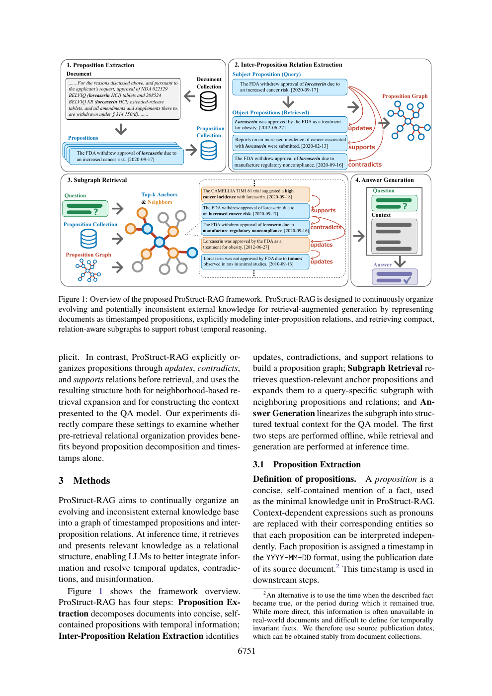
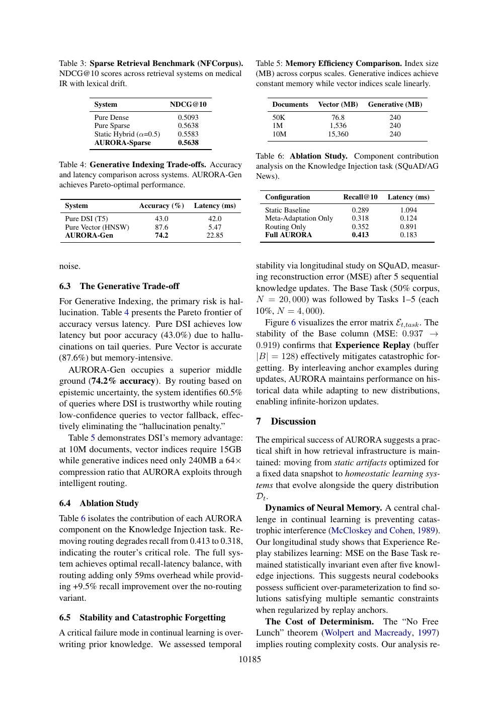
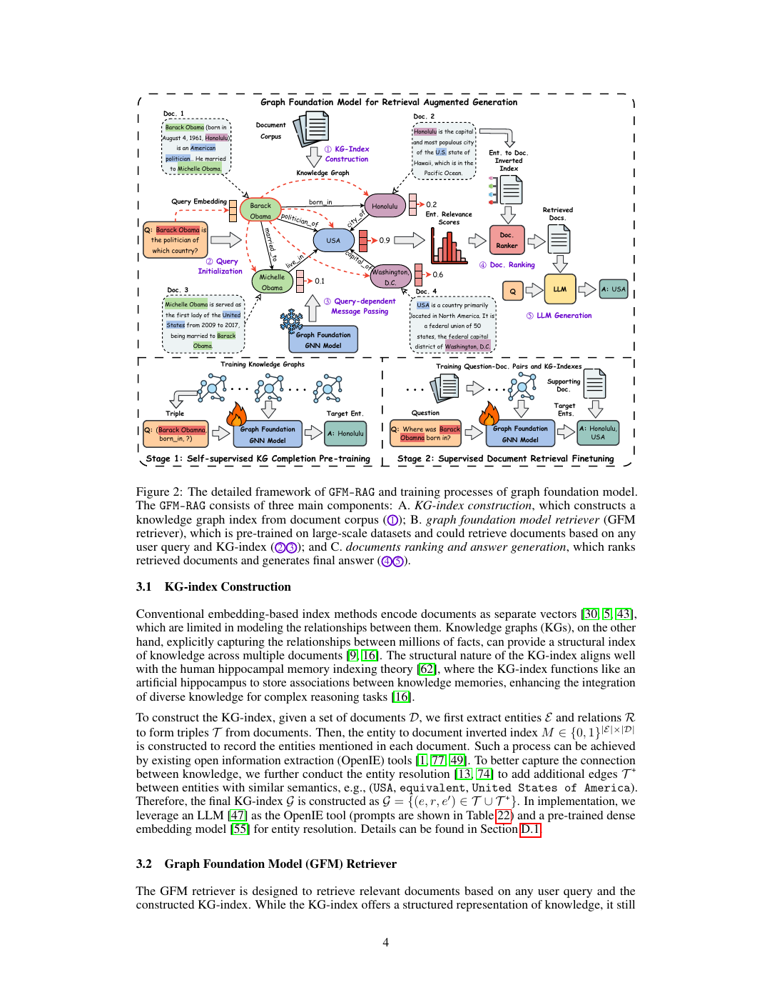
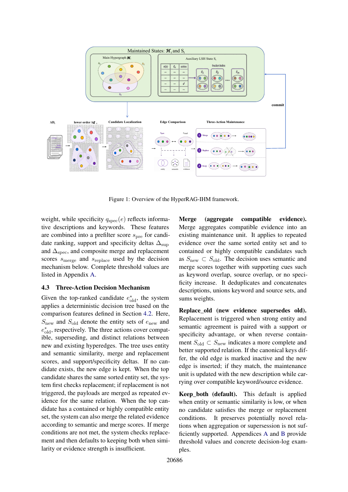

变化中的知识，
如何被 RAG 使用？
把老师发来的四个链接放到一张研究地图里：知识怎么组织、索引怎么适应变化、图上怎么检索，以及新知识怎么并入旧结构。
阅读口径：下文“论文结果”来自原文；“我的判断 / 讨论设想”是整理者的分析，尚未实验验证。这里的比较用于理解研究位置，不能当作统一基准排行榜。
先记住四句话
“我把它们分成了事实关系组织、索引适应、图检索学习和结构增量维护四个层面。它们互有联系，但处理的变化类型和实验目标不同。”
放回 RAG 的流程，就不会混淆
IHM：新旧超边维护
GFM：图上的检索推理
这是便于理解的功能定位，四个系统的实际模块存在交叉。例如 ProStruct 也做子图检索，IHM 也维护辅助 LSH 索引。
六个术语，读前先对齐
RAG：先查外部资料，再让模型回答。命题（proposition）：一条可独立理解的事实陈述。知识图谱：实体与关系组成的图。超边：一条边连接一组实体，能记录多实体关联。分布漂移：后来出现的主题或词语与建索引时不同。持续学习：吸收后续数据，同时尽量保留旧任务能力。
四项工作的研究位置
| 工作 | 变化 / 痛点 | 核心对象与手段 | 实验主要回答什么 |
|---|---|---|---|
| ProStruct-RAG EMNLP 2026 | 旧事实、新事实与错误信息混杂 | 时间戳命题 + 三类关系 + 子图上下文 | 组织关系能否提高时间敏感 QA 的正确率？ |
| AURORA Findings ACL 2026 | 新主题和新术语导致检索分布失配 | 神经码本 / 适配器 + Reptile 元学习 + 不确定性路由 | 能否少样本、低成本恢复检索能力？ |
| GFM-RAG NeurIPS 2025 项目线 | 多跳证据难找；图有噪声和缺边 | 查询条件 GNN + 两阶段训练 + 实体到文档排序 | 预训练图检索器能否迁移到未见语料？ |
| HyperRAG-IHM EMNLP 2026 | 语料扩充后全量重建成本高、关系重复 | 低阶超边 + LSH 候选 + 三动作维护 | 增量结构是否能保住重建质量并省成本？ |
最关键的区分：“增加文档”“事实发生变化”“词义 / 查询分布漂移”“换到新领域”是不同问题。一个方法支持新增文档，并不自动意味着它能解决旧事实失效；一个模型能跨图迁移，也不等于已验证连续更新中的稳定性。
依据：各论文摘要、方法与局限，以及 GFM-RAG 官方项目文档。原文入口见各节。
用同一个小例子理解差别
假设知识库记录一家虚构实验室：2024 年负责人是林某；2026 年公告改为陈某；另一篇材料说负责人是王某。新材料还引入一个旧检索器不认识的缩写。
教学示例，由整理者编写；用于解释机制，不是论文实验或真实系统输出。
先组织事实间关系，再让 LLM 回答
Beyond Retrieval: Structuring Evolving and Inconsistent External Knowledge with Proposition Relations for RAG
Noriki Nishida、Fei Cheng、Yuji Matsumoto · EMNLP 2026 · 23 页
它在解决什么
普通 RAG 可能同时检索到旧状态、新状态和错误消息。只把这些片段交给模型，并不能保证模型理解“过去成立、现在被更新”和“同一状态下互相矛盾”的区别。作者把这种辨别工作部分前移到知识组织阶段。
关系候选先由稠密检索筛选：每条新命题找最多 20 条同日或更早的相关命题，再由 LLM 分类并用更强模型精炼。查询时先找 top-k 锚点，再可沿入边与出边取一跳邻居。这里的 k 是锚点数，扩展后的总上下文可能更大。原文 §3，PDF 第 4–5 页
最有说服力的证据
在虚构时间问答集 Asteria、GPT-4o、k=400 的相同设置下：命题 RAG 为 41.1%，加入时间为 58.9%，ProStruct-RAG 为 86.1%。这一组结果支持“关系组织有额外价值”，而不只是切分成小事实。去掉关系标签降为 82.2%。表 3–4，PDF 第 7–8 页
任务是时间敏感的多项选择 QA；不能把这些正确率直接等同于开放域自由生成质量。Asteria 用虚构事件减轻模型预训练知识污染。
值得带走
“命题图”里的边描述事实之间的逻辑与时间关系；它与“某实体位于某城市”这类实体关系图不是同一个抽象层次。
我的判断 / 追问
发表时间未必是事实生效时间；关系抽错也会影响回答。连续到达场景下，还应测量每批关系维护成本、错误积累与旧答案保留，而不仅是最终 QA。
原始框架图与阅读位置

索引不全重建，也能适应新主题吗？
AURORA: Neuro-Symbolic Continual Indexing for Evolving RAG Systems
Manoj Saravanan、Rohit Kumar Salla、Ramya Manasa Amancherla · Findings ACL 2026 · 17 页
它在解决什么
知识库和用户问题不断变化，原有索引的度量与新分布可能失配。作者把索引维护视作少样本持续学习：保留离散结构，适应可学习组件，再按置信度选择检索方式。
稠密分支使用神经码本与残差门控；稀疏分支适应 SPLADE 的术语扩展；生成式分支根据 DSI 生成文档 ID 的置信度回退。Reptile 学习易于少步适应的初始化，经验回放用于减轻遗忘。原文 §4–5，PDF 第 4–5 页
数字要连同实验条件一起读
表 2 报告新语义簇的适应时间为 28.2 ms，全量重训练为 5149.5 ms。这是特定适应操作的时间；前置训练、元学习和其他成本需另计。表 6 的 Recall@10 从静态基线 0.289 到 Full AURORA 的 0.413，提升为 0.124，即 12.4 个百分点。表 2、表 6
表 4 中 Pure Vector 的准确率为 87.6%、延迟 5.47 ms；AURORA-Gen 为 74.2%、22.85 ms。仅按这两列，Pure Vector 同时更准且更快；若讨论作者所说的折中优势，需要把内存成本和统计范围一起纳入，不能说 AURORA 在准确率与延迟上都更优。表 5 的生成式内存值也不能直接当作带向量回退的整个混合系统内存。
原文采用受控漂移与合成术语替换，真实长期演化仍是局限。对“冻结拓扑”的稠密分支，还应追问新增文档如何进入候选集合、候选召回上限如何测量。
前两句是对表 4–5 的直接比较与统计口径追问，不构成对作者实现的复现验证。定位：PDF 第 7 页；自然漂移局限见第 8 页。
代码状态：本次在论文、官方论文页及按完整标题检索中，未确认到作者明确关联的代码仓库。因此只存已核实论文与元数据，不把同名 AURORA 项目当成它的实现。
展开查看原始表格页

训练一个可以迁移到新图的检索器
GFM-RAG: Graph Foundation Model for Retrieval Augmented Generation
Linhao Luo 等 · NeurIPS 2025 · 本地保存 arXiv v3，35 页
它在解决什么
回答多跳问题需要把多个文档的知识连接起来。传统向量检索可能漏掉中间证据，单靠固定图遍历也易受噪声和缺边影响。GFM-RAG 学习“问题怎样沿图传播，哪些实体和文档因此相关”。
原论文的 8M 参数图检索器先做知识图谱补全预训练，再用问题与支持文档做监督微调。文中训练语料包括 60 个知识图谱、超过 1400 万条三元组和约 70 万文档。模型可直接用于未见语料，但新语料仍需要构图与相关编码。原文 §3.2–4.1，PDF 第 6–7 页
关注证据检索，而不只看最后回答
表 1 中，单步 GFM-RAG 的 Recall@2 在 HotpotQA / MuSiQue / 2Wiki 上分别为 78.3 / 49.1 / 90.8；相较同表 IRCoT + HippoRAG（ColBERTv2）的 67.0 / 45.3 / 75.8，体现其多跳文档检索能力。不同论文数据与设置不一致，不能把这组数与前两篇的 QA 正确率直接比较。表 1，PDF 第 8 页
官网现在共同承载 GFM-RAG 与后续 G-reasoner。前者是原始图检索工作；后者是新的图基础模型架构。README 提供 GFM-RAG-8M 和 G-reasoner-34M 两类模型，并有“自带图”接口。原论文的 60 图训练设置、README 后续版本的 286 图，以及最新示例使用的模型不能混为同一版本。
依据：官方仓库 README / News 与项目 Overview。已保存对应快照和固定提交代码。
复现起点
先读本地 README 与 Quick Start。当前文档要求 Python 3.12、CUDA 12+。可以从小文档集合构图，也可用符合 nodes / relations / edges CSV 格式的已有图。
我的判断 / 追问
它适合作为“学习型图检索器”基线。但跨图迁移与同一知识库持续更新是不同评估；接入时间关系或超边后，还要验证表示转换和训练分布是否匹配。
原始框架图与阅读位置

新知识进来，只维护有关的超边
HyperRAG-IHM: Incremental Hyperedge Maintenance for Hypergraph RAG under Corpus Expansion
Haoyu Chen 等 · EMNLP 2026 · 12 页
它在解决什么
知识库增加一批文档时，重新抽取全部历史文本、重建整个超图很贵；直接追加新关系又可能产生重复、重叠或被替代的记录。IHM 的贡献落在关系记录的维护，而非训练一个新的回答模型。
作用范围：LSH 三动作维护具体用于低阶超边；高阶超边沿用实体键聚合。决策采用手设阈值，不是另训一个 LLM 判断器。主超图写回成功后再提交辅助 LSH 状态，以保持一致。原文 §3–4，PDF 第 3–6 页
最直接的贡献是更新成本
| Pathology 单次 5% 语料更新 | LLM tokens（百万） | 时间（秒） |
|---|---|---|
| HyperRAG-IHM 增量维护 | 1.63 | 1,221.06 |
| HyperRAG 全量重建 | 32.95 | 22,947.62 |
来源：表 1，PDF 第 7 页。约 20 倍 token、19 倍时间差是该场景的构建 / 更新成本，不是查询延迟或所有更新比例下的普遍结论。
Pathology 的 8 维两两比较中，IHM 在有明确偏好的比较项里占 58.25%；这不是事实正确率。跨域 MixCorp 的 5D 分数为 53.39，低于全量重建的 54.65，因此更稳妥的概括是“显著省成本，质量总体可比，效果随场景变化”。§5.2、表 1、表 4
原文明确指出：真实文档修订、时间冲突和新鲜度敏感问题尚未纳入当前评估；判断阈值是经验设定，缺少人工标注评估。相同实体集合也可能描述不同关系，合并 / 替换是否丢失历史有效证据，是很好的讨论点。Limitations，PDF 第 9 页
代码状态：本次在论文、官方论文页与标题检索中未确认作者公开实现入口。基础 HyperRAG 与本文 IHM 扩展需分开，不能用基础项目代替论文扩展的源码。
查看原论文框架页

周五可以这样展开讨论
先用 90 秒说清你的理解
这四项工作都在改进外部知识如何被 RAG 使用。ProStruct 关注事实间的时间和逻辑关系；AURORA 关注分布漂移下的检索索引适应；GFM-RAG 关注可迁移的多跳图检索；IHM 关注新增文档时的超边维护成本。我想进一步讨论，我们更关心哪一种变化，以及是否需要同时测量新知识吸收、旧知识保留、冲突处理和更新成本。
优先问老师的五个问题
- 任务边界：我们要做新增文档、事实修订 / 撤回、术语漂移，还是领域迁移？这决定核心贡献和实验协议。
- 知识表示：研究对象应是实体图、命题关系图，还是超图？时间和来源如何进入表示？
- 比较对象：能否统一比较全量重建、直接追加、实体键聚合、带关系维护和学习型检索？预算如何对齐？
- 评估：除最终答案，还能否测证据召回、历史 / 当前答案一致性、更新 token 与时间、结构膨胀和遗忘？
- 首个实验：能否先用公开 Asteria 做小规模关系组织实验，再考虑真实时间语料或更复杂的图检索？
两个可讨论的研究切口
用更新 / 矛盾 / 支持关系指导新旧证据维护，并保留时间与来源。先比较“只按相似度合并”和“区分时序语义”的区别。
设想，未验证创新性。重点挑战是有效时间、关系错误传播与不能简单删除的历史事实。
固定一个预训练图检索器，观察多轮新增或修订后，检索召回与旧任务表现如何变化，再判断是否需要轻量适应。
设想，未验证创新性。先解决实体图、命题图或超图到检索器输入的表示兼容，不能直接拼接四个系统。
明天前的阅读顺序
- 15 分钟：读本页整体对照与共享例子，记住四者改的是哪一层。
- 25 分钟：ProStruct 的 Figure 1、§3、表 3–4，重点理解关系标签的额外价值。
- 25 分钟：IHM 的 §4、表 1–4 与局限，重点理解增量协议和指标。
- 20 分钟：GFM 的 Figure 2、§3、表 1，确认官网最新版本与原论文差别。
- 20 分钟：AURORA 的 §4、表 2 / 4 / 6，核对速度、质量与内存各自口径。
会前核对清单
我的讨论笔记
主阅读材料
目录首页优先呈现原论文、详读 Markdown 与本页导读。需要追溯代码、数据或原网页时，再打开下方附属资料。
| 工作 | 本地原文 | 来源 |
|---|---|---|
| ProStruct-RAG | 论文 PDF | ACL Anthology |
| AURORA | 论文 PDF | ACL Anthology |
| GFM-RAG | 原论文 v3 PDF | arXiv · 项目文档 |
| HyperRAG-IHM | 论文 PDF | ACL Anthology |
| 补充：G-reasoner | 论文 PDF | arXiv |
查看代码、数据集和来源快照
这类资料不属于日常阅读主线，已收在 supporting 附属资料目录。其中包括固定提交的作者代码包、Asteria 数据、原网页快照、论文文字提取、配图和下载校验记录。AURORA 与 HyperRAG-IHM 的作者代码尚未确认。论文 PDF 和笔记留在本目录第一层，方便直接预览。